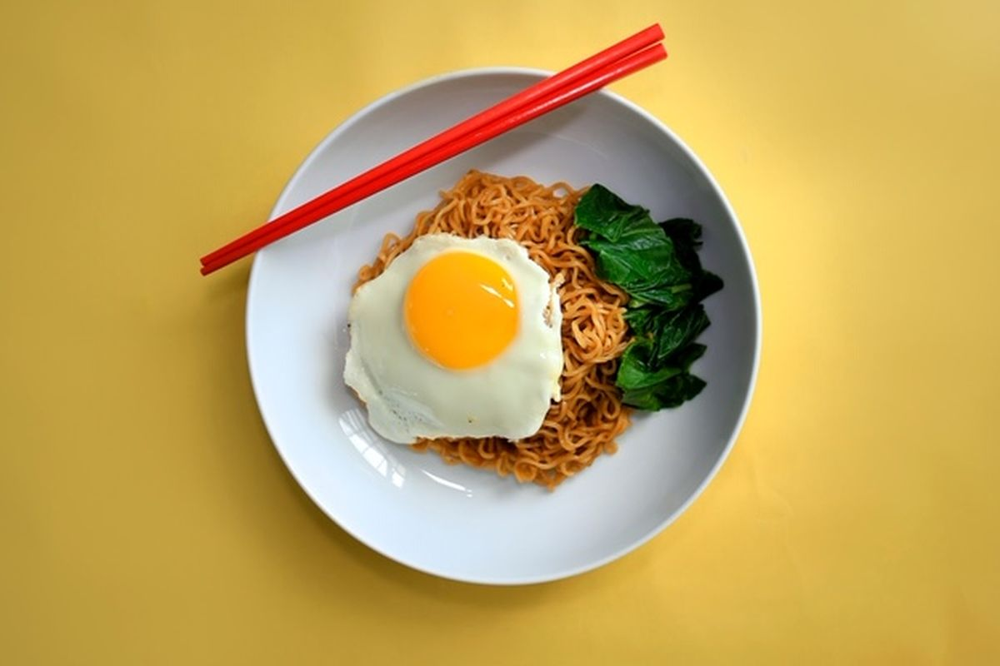

Indomie Goreng

Description
This is the best way to eat indomie Goreng. It consist of noodles, protein and vegetables to its healthy and tasy
Ingridients
- Indomie Goreng (whatever flavour)
- Egg
- Mustard Green
- Water
Steps
- Pour water on pan around 500 ml
- Put the pan on the stove and boil the water
- After it boils, crack egg and put in on the water
- Wait for around 5 minutes until the egg is cooked
- Put the indomie into the pan until it cooked
- Put the Mustard green finto the pan or a minute
- Drain the broth from the pan
- Put the noodles, egg and mustard greens to the bowl
- FInally, add the seasoning to it
Back to Home